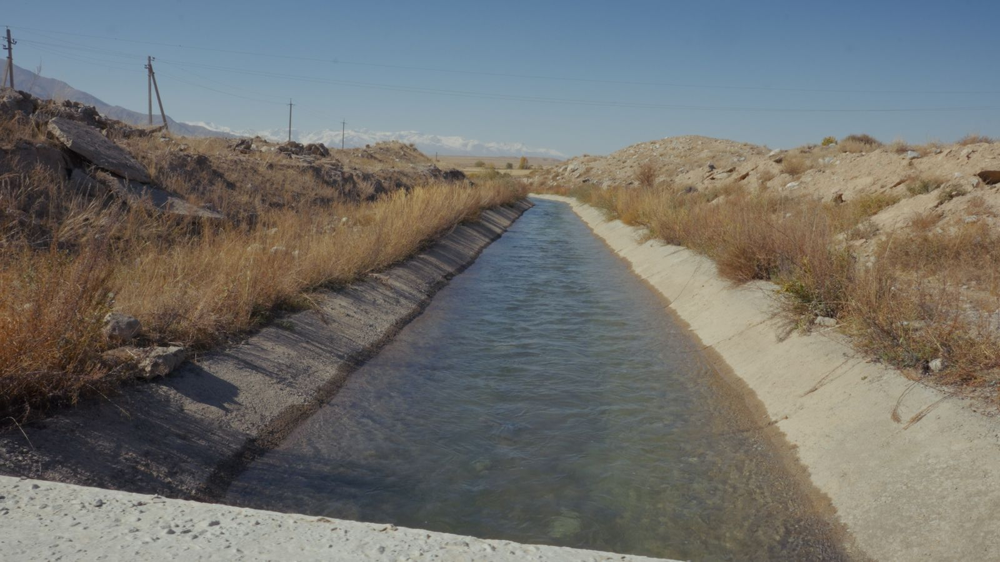

Protecting surface infrastructureGeorgia, Tbilisi
In this project, CCX-M was used to stabilise slopes to protect surface infrastructure: railway tracks. The work had to be done in confined conditions. A crane was used to unroll the CCX-M rolls. The work was carried out by a crew of 5 with industrial climbers. A total of 1,850 m² was laid in 2 days.